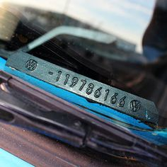

The Vehicle Identification Number (VIN) is a unique code assigned to every motor vehicle when it's manufactured. It serves as the vehicle's fingerprint, containing information about its manufacturer, specifications, and production details. VINs typically consist of 17 characters, which can include both letters and numbers. Here's a breakdown of what each character represents.
Country of Origin: The first character(s) indicate the country where the vehicle was manufactured.
Manufacturer: Characters 2-3 represent the manufacturer of the vehicle.
VEHICLE TYPE AND MAKE: Characters 4-8 provide information about the vehicle's make, model, body type, engine type, and series.
RESTRAINT SYSTEM TYPE: Character 9 is a security code or check digit used to verify the accuracy of the VIN.
CHECK DIGIT: Character 10 acts as a verification code to ensure the VIN is valid.
MODEL YEAR: Character 10 represents the model year of the vehicle.
ASSEMBLY PLANT: Characters 12-17 indicate the specific assembly plant where the vehicle was manufactured.
Understanding the VIN is crucial for various purposes, including vehicle registration, insurance claims, recalls, and theft prevention. By decoding the VIN, you can gather important information about a vehicle's history and specifications.
The Vehicle Identification Number (VIN) has evolved over time to become the standardized system we know today. Here's a detailed history of its development:
Pre-1954: Before the introduction of VINs, vehicle identification relied on various methods such as serial numbers, engine numbers, and manufacturer-specific codes. This lack of standardization made it challenging to track vehicles accurately.
1954-1980s: In the early 1950s, automakers began using VIN-like systems, but there was no universal standard. Different manufacturers used varying formats and lengths for vehicle identification. This lack of consistency created confusion and made it difficult to share information across different entities.
1981-Present: To address the need for a standardized identification system, the National Highway Traffic Safety Administration (NHTSA) in the United States mandated the use of 17-character VINs for all vehicles manufactured after 1980. This move aimed to improve vehicle safety, recall effectiveness, and theft prevention.
0 17-Character Format: The modern VIN consists of 17 characters, including both letters and numbers. Each character provides specific information about the vehicle's manufacturer, model, features, and production details.
International Standards: The VIN system adopted by the NHTSA follows international standards established by the International Organization for Standardization (ISO). This standardization ensures consistency and compatibility across different countries and regions.
Expansion of Information: Over time, the VIN system has expanded to include more detailed information about vehicles, such as engine type, transmission, trim level, and optional equipment. This additional data helps authorities, manufacturers, and consumers track and identify vehicles more accurately.
Digitalization and Integration: With advancements in technology, VIN data has become increasingly digitalized and integrated into various databases and systems. This allows for efficient vehicle registration, insurance processing, and maintenance tracking.
Vehicle History Services: The availability of VIN-based vehicle history reports has empowered consumers to make more informed decisions when purchasing used vehicles. These reports compile information from various sources, including title records, accident history, and odometer readings, providing valuable insights into a vehicle's past.
Overall, the evolution of the VIN system represents a significant step forward in vehicle identification, standardization, and traceability, enhancing safety, transparency, and efficiency in the automotive industry.
Finding the Vehicle Identification Number (VIN) of your car is typically straightforward. Here are some common places where you can locate the VIN:
1. DASHBOARD: Look through the windshield on the driver's side. The VIN is usually stamped or etched on a metal plate visible from the outside of the vehicle, near the bottom of the windshield. 
2. DRIVER'S SIDE DOOR JAMB: Open the driver's side door and examine the area where the door latches to the
frame of the vehicle. You may find a sticker or metal plate with the VIN printed or stamped on it.

3. VEHICLE REGISTRATION DOCUMENTS: The VIN is often listed on your vehicle registration documents provided by your local Department of Motor Vehicles (DMV) or equivalent authority.

4. INSURANCE CARD: Some insurance cards list the VIN of the insured vehicle. Check your insurance documents or card for the VIN.
5. VEHICLE TITLE:
The VIN is usually listed on the title to the vehicle

6. MAINTENANCE RECORD: If you have kept maintenance records for your vehicle, the VIN may be listed on invoices or service records provided by mechanics or service centers.
If you're having trouble locating the VIN using these methods, refer to your vehicle's owner's manual for guidance. It often contains information on where to find the VIN. Once you locate the VIN, you can use it to obtain vehicle history reports, register your vehicle, or perform VIN decoding to learn more about your car's specifications and history.